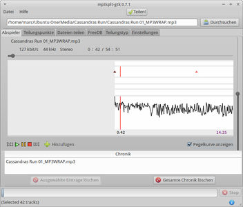

mp3splt
Dieser Artikel wurde für die folgenden Ubuntu-Versionen getestet:
Ubuntu 16.04 Xenial Xerus
Ubuntu 14.04 Trusty Tahr
Zum Verständnis dieses Artikels sind folgende Seiten hilfreich:
Beim Schneiden komprimierter Audio-Dateien (z.B. MP3 oder OGG) kodieren (komprimieren) viele Programme die geschnittene Datei beim Speichern neu, was einen unnötigen Zeitaufwand und einen Qualitätsverlust bedeutet. Mit dem Kommandozeilen-Programm mp3splt  und der dazu gehörigen grafischen Oberfläche mp3splt-gtk kann man diese Audio-Dateien schneiden, ohne dass sie neu kodiert werden müssen.
und der dazu gehörigen grafischen Oberfläche mp3splt-gtk kann man diese Audio-Dateien schneiden, ohne dass sie neu kodiert werden müssen.
Mit den Programmen Audacity und mhWaveEdit ist es ebenfalls möglich, Audio-Dateien zu schneiden. Im Gegensatz zu mp3splt werden geschnittene Dateien beim Speichern aber immer neu kodiert bzw. komprimiert.
Hinweis:
Die grafische Oberfläche ist ab Ubuntu 16.04 nicht mehr in den offiziellen Paketquellen enthalten, sondern steht nur noch als Fremdpaket zur Verfügung.
Installation¶
Aus den offiziellen Paketquellen kann man folgende Pakete installieren [1]:
mp3splt (universe, Kommandozeilen-Version)
mp3splt-gtk (universe, grafische Oberfläche, nur bis Ubuntu 15.10)
 mit apturl
mit apturl
Paketliste zum Kopieren:
sudo apt-get install mp3splt mp3splt-gtk
sudo aptitude install mp3splt mp3splt-gtk
Damit Audio-Dateien abgespielt werden können, wird noch ein Audio-Player benötigt. Im Gegensatz zu älteren Versionen unterstützt Mp3splt mittlerweile verschiedene Programme. Unter Ubuntu ist das Multimedia-Framework GStreamer vorinstalliert, so dass keine extra Programmme notwendig ist. Wichtig ist nur, dass die benötigten Codecs für MP3 und OGG installiert worden sind.
KDE¶
Möchte man das Programm unter Kubuntu nutzen, müssen vor der Installation der Pakete noch einige Abhängigkeiten aus den offiziellen Paketquellen installiert [1] werden. Man benötigt die folgenden Pakete:
libmowgli1 (universe)
libmcs1 (universe)
libaudclient1 (universe)
mit apturl
Paketliste zum Kopieren:
sudo apt-get install libmowgli1 libmcs1 libaudclient1
sudo aptitude install libmowgli1 libmcs1 libaudclient1
Anschließend installiert man die Pakete für Mp3splt wie oben beschrieben.
Fremdpaket¶
Über SourceForge stehen Einzelpakete zur Verfügung, die man herunterladen und manuell installieren kann [2].
Hinweis!
Fremdpakete können das System gefährden.
Bedienung¶
|  |
| Hauptfenster |
Nach der Installation findet man bei Ubuntu-Varianten mit einem Anwendungsmenü unter "Multimedia -> Mp3splt-gtk audio splitter" einen Programmstarter [3] für die grafische Oberfläche.
Datei laden¶
Zuerst wählt man im Hauptfenster über "Durchsuchen" die zu bearbeitende Audio-Datei aus. Hat man eine Datei ausgewählt, kann diese nun mit der Wiedergabe-Schaltfläche abgespielt werden.
Pegelkurve¶
Während des Abspielens empfiehlt sich die Aktivierung des Kontrollkästchens "Pegelkurve". Nach einigen Sekunden erscheint daraufhin ein schwarzer Graph im Bearbeitungsbereich, dessen Ausschlag Aufschluss über ruhige Stellen im Titel gibt (hilfreich, um Übergangsstellen zu finden, an denen beispielsweise ein neuer Titel beginnt).
Navigation¶
Die aktuelle Audioposition wird durch einen vertikalen roten Balken in der Mitte des Fensters angezeigt. Man kann den angezeigten Bereich verkleinern oder vergrößern, indem man im Bearbeitungsbereich die rechte Maustaste ( ) gedrückt hält und die Maus horizontal bewegt. Durch den Titel navigieren kann man entweder über den Schiebebalken, der sich direkt über dem Bearbeitungsbereich befindet, oder indem man die linke Maustaste (
) gedrückt hält und die Maus horizontal bewegt. Durch den Titel navigieren kann man entweder über den Schiebebalken, der sich direkt über dem Bearbeitungsbereich befindet, oder indem man die linke Maustaste ( ) an einer beliebigen Stelle im Bearbeitungsbereich gedrückt hält und die Maus horizontal verschiebt.
) an einer beliebigen Stelle im Bearbeitungsbereich gedrückt hält und die Maus horizontal verschiebt.
Am rechten Rand befindet sich ein Schieberegler zur Verstellung der Lautstärke.
Teilungspunkte¶
Teilungspunkte nennen sich die Punkte, an denen der Titel geschnitten wird. An der gewünschten Stelle klickt man nun zuerst auf die Pause-Schaltfläche und anschließend auf "Hinzufügen", um einen Teilungspunkt zu setzen. Alles nach diesem Teilungspunkt wird später als separate Datei gespeichert.
Ein Teilungspunkt besitzt zudem mehrere Symbole (von oben nach unten):
magenta Quadrat: Linksklick wählt den Teilungspunkt aus (Titel wird dann im Reiter "Teilungspunkte" markiert); Rechtsklick löscht den Teilungspunkt
grüner Kreis: linke Maustaste gedrückt halten, um den Teilungspunkt zu verschieben; Rechtsklick spielt den Titel von dieser Stelle bis zum nächsten Teilungspunkt ab
weißes Quadrat (Kontrollkästchen): Linksklick aktiviert/deaktiviert den Teilungspunkt. Ist der Teilungspunkt deaktiviert, wird der Bereich bis zum nächsten aktivierten Teilungspunkt später nicht exportiert (ideal zum Entfernen unbenötigter Teile).
Es werden später nur die Dateien exportiert, die von zwei Teilungspunkten umschlossen sind. Will man also zum Beispiel eine Datei in der Mitte teilen, benötigt man drei Teilungspunkte: so wählt man den ersten Punkt ganz am Anfang, bevor die Wiedergabe beginnt und den zweiten in der Mitte des Stücks. Der dritte wird am Ende der Datei positioniert. Unter dem Reiter "Teilungspunkte" kann man die Teilungspunkte benennen. Hier können auch jederzeit bereits gesetzte Punkte einzeln oder alle auf einmal entfernt werden.
Optional: Externe Teilungspunkt-Dateien¶
Im Reiter "CDDB und CUE" können Dateien importiert werden, um die Teilungspunkte automatisch zu setzen. Streamripper kann zum Beispiel einen Internet-Radiosender aufzeichnen und gleichzeitig eine passende .cue-Datei erstellen. Der Inhalt eines solchen Cuesheet kann zum Beispiel so aussehen:
FILE "23.07.2009_11:06:19.mp3" MP3
TRACK 01 AUDIO
TITLE "Tower of Light by David Arkenstone from Atlantis: A Symphonic Journey"
PERFORMER ""
INDEX 01 00:00:00
TRACK 02 AUDIO
TITLE "Firelord by Glyn R Brown"
PERFORMER ""
INDEX 01 05:27:00
TRACK 03 AUDIO
TITLE "Devil Square Intro by Jung jae hwan from Mu online (2004)"
PERFORMER ""
INDEX 01 10:39:00
TRACK 04 AUDIO
TITLE "Car Drive by Paul Houseman from Paul Houseman: Minor Thrills"
PERFORMER ""
INDEX 01 11:37:00
TRACK 05 AUDIO
TITLE "Track 19 by Jeremy Soule from Dungeon Siege II - Complete Game Score (2005)"
PERFORMER "19"
INDEX 01 13:16:00
TRACK 06 AUDIO
TITLE "The Angelic March by Richard J Durand from The Dramatic War - Lost Fable (2006)"
PERFORMER "10"
INDEX 01 15:57:00
TRACK 07 AUDIO
TITLE "Original Soundtrack (2006)"
PERFORMER "Land of the Golden Sun by Jeremy Soule from Guild Wars Nightfall"
INDEX 01 19:58:00
TRACK 08 AUDIO
TITLE "Odyssey"
PERFORMER "Rule City by Chris Field from Ultima X"
INDEX 01 22:11:00
TRACK 09 AUDIO
TITLE "Track 08 by Jeremy Soule from Dungeon Siege II - Complete Game Score (2005)"
PERFORMER "08"
INDEX 01 26:14:00
TRACK 10 AUDIO
TITLE "Useless Crucifix by Alan Silvestri from Van Helsing (Score) OST (2004)"
PERFORMER ""
INDEX 01 30:23:00
TRACK 11 AUDIO
TITLE "On the Brink of Defeat by Kirill Pokrovsky from Divine Divinity"
PERFORMER ""
INDEX 01 32:57:00
TRACK 12 AUDIO
TITLE "Volume 2 (2004)"
PERFORMER "Firelit Council by Markus Holler from Merregnon"
INDEX 01 35:53:00
TRACK 13 AUDIO
TITLE "Dark Night Toccata (Walters Theme) by Michiru Yamane from Castlevania: Lament Of Innocence (2003)"
PERFORMER ""
INDEX 01 39:48:00
TRACK 14 AUDIO
TITLE "Tomb of the Cursed by Dronolan's Tower from Journey's in Darkness Vol.1: Those Who Dwell Beneath (2008)"
PERFORMER ""
INDEX 01 42:21:00
TRACK 15 AUDIO
TITLE "Vanguard Theme by Kai Rosenkranz from Gothic 3 (2006)"
PERFORMER ""
INDEX 01 49:47:00
TRACK 16 AUDIO
TITLE "Track 67 by Jeremy Soule from Dungeon Siege II - Complete Game Score (2005)"
PERFORMER "67"
INDEX 01 50:59:00
TRACK 17 AUDIO
TITLE "Track 49 by Jeremy Soule from Dungeon Siege II - Complete Game Score (2005)"
PERFORMER "49"
INDEX 01 51:54:00
TRACK 18 AUDIO
TITLE "Stadium by MGame Corporation & Noah System from Knight Online (2004)"
PERFORMER ""
INDEX 01 52:26:00
TRACK 19 AUDIO
TITLE "Climactica by Paul Houseman"
PERFORMER ""
INDEX 01 53:56:00
TRACK 20 AUDIO
TITLE "The Shadows Theme by Mark Morgan from Planescape: Torment OST"
PERFORMER ""
INDEX 01 54:58:00Mit Klick auf die Schaltfläche "Nach .cue-Datei suchen" kann man die Datei importieren. Danach werden alle Teilungspunkte mit Klick auf die Schaltfläche "CUE-Teilungspunkte hinzufügen" hinzugefügt und beschriftet, sodass man nur noch die Feineinstellungen im Player tätigen muss. Analog dazu kann man CDDB- oder FreeDB-Dateien importieren, um eine CD zu schneiden, die nur aus einem einzigen Stück besteht.
Hinweis:
In der .cue-Datei des obigen Beispiels fällt auf, dass der Sender nur Einträge bei "TITLE" und keine bei "PERFORMER" hat. Damit die Teilungspunkte gut beschriftet werden, sollte man daher im Reiter "Einstellungen" bei "Ausgabe" das Optionsfeld "Benutzerdefiniertes Format" aktivieren und dort "@t" eintragen. Hat der Sender auch bei "PERFORMER" etwas stehen, bietet sich das Format "@p - @t" an. Dadurch werden die Teilungspunkte im Format "Interpret - Titel" beschriftet. Diese Einstellung muss getätigt werden, bevor man die .cue-Datei auf das Projekt anwendet.
Datei teilen¶
In der Menüzeile am oberen Bildrand befindet sich ein grünes Häkchen. Mit einem Mausklick wird die Datei in mehrere Dateien exportiert. Die Dateinamen entsprechen den Bezeichnungen der Teilungspunkte.
Terminal¶
Der Aufruf über das Terminal [4]:
mp3splt DATEI start_zeit stop_zeit... [AUSGABEDATEI]
| mp3splt | |
| Syntax | Beschreibung |
mp3splt -w 04-Schratherbst_MP3WRAP.mp3 | Löst ein mit mp3wrap erstellt Archiv auf und zerlegt es in die ursprünglichen Dateien |
mp3splt -l 04-Schratherbst_MP3WRAP.mp3 | Archivinhalt einsehen - Auskunft über enthaltene Dateien und deren Anzahl erhalten |
mp3splt MP3-Datei.mp3 -c CUE-Datei.cue | Möchte man eine MP3-Datei anhand einer .cue-Datei schneiden, lässt sich das auch ohne grafische Oberfläche erledigen |
Die deutsche Man-Page  erklärt alle Funktionen bis ins Detail.
erklärt alle Funktionen bis ins Detail.
mp3wrap¶
Mit mp3splt lassen sich mit mp3wrap erstellte Dateien wieder trennen. Mit diesem Programm erstellte Dateien erkennt man am Namenszusatz MP3WRAP. Sofern dieser nicht vorhanden sein sollte, sollte man den ID3v2-Kommentar überprüfen, um festzustellen, ob es sich um ein Archiv handelt, welches mit mp3wrap erstellt wurde.
Links¶
mp3DirectCut
- Windows-Programm, das in Kombination mit Wine genau wie mp3splt Schneiden ohne Neukompression ermöglichtLAME - MP3-De/Encoder
Vorbis - Ogg/Vorbis-De/Encoder
- Erstellt mit Inyoka
-
 2004 – 2017 ubuntuusers.de • Einige Rechte vorbehalten
2004 – 2017 ubuntuusers.de • Einige Rechte vorbehalten
Lizenz • Kontakt • Datenschutz • Impressum • Serverstatus -
Serverhousing gespendet von